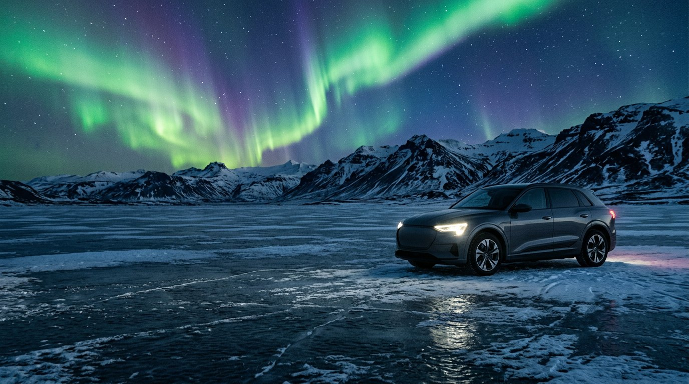
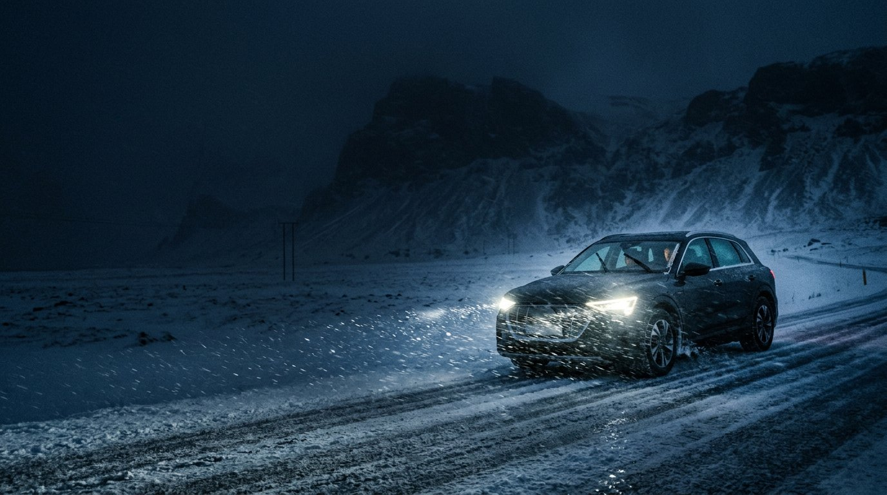
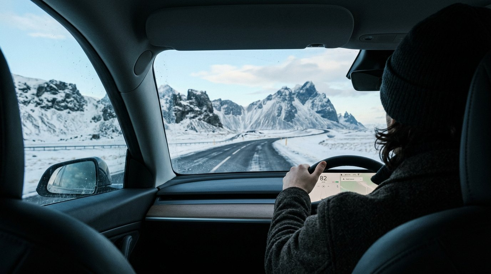
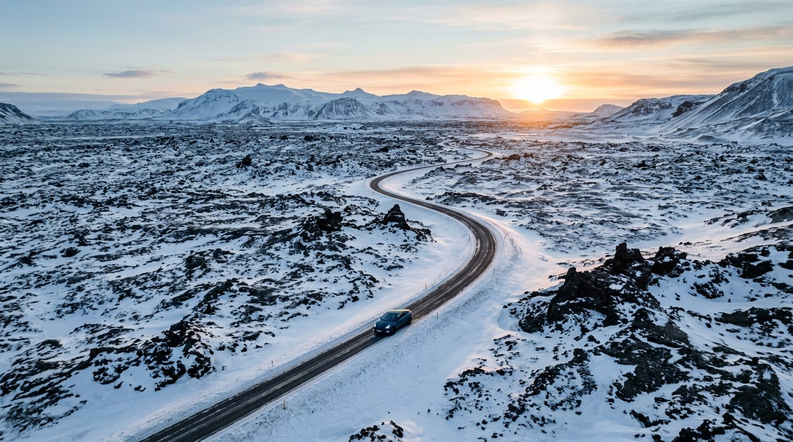
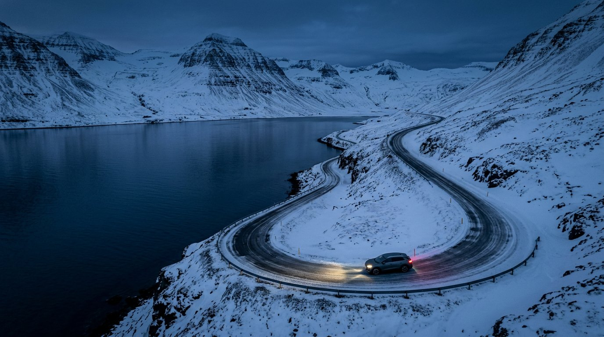
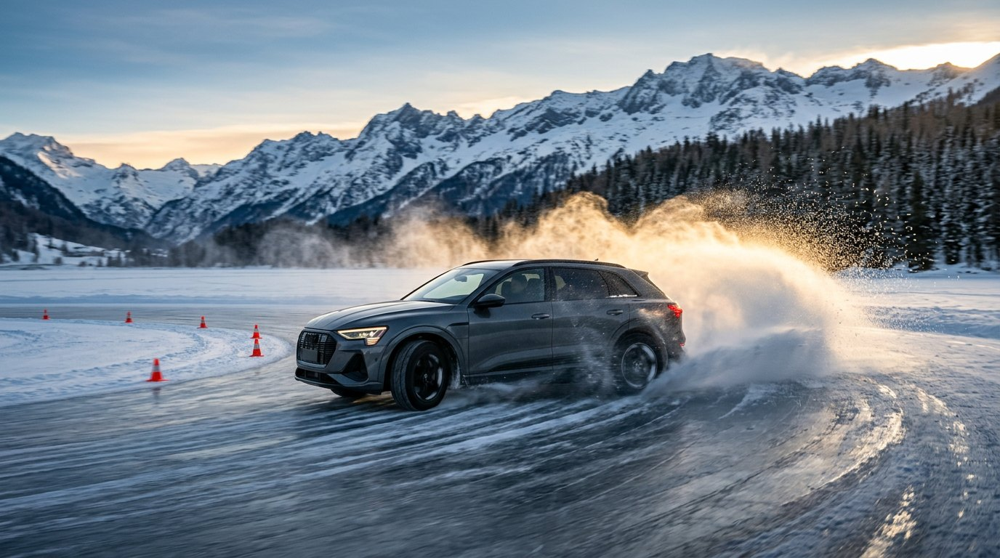
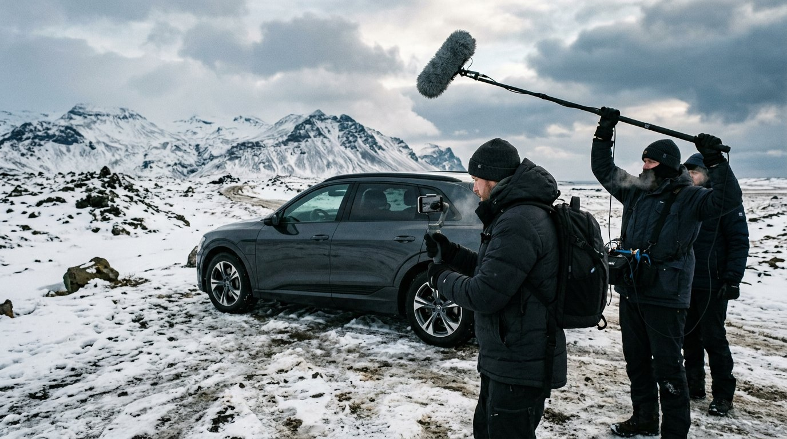
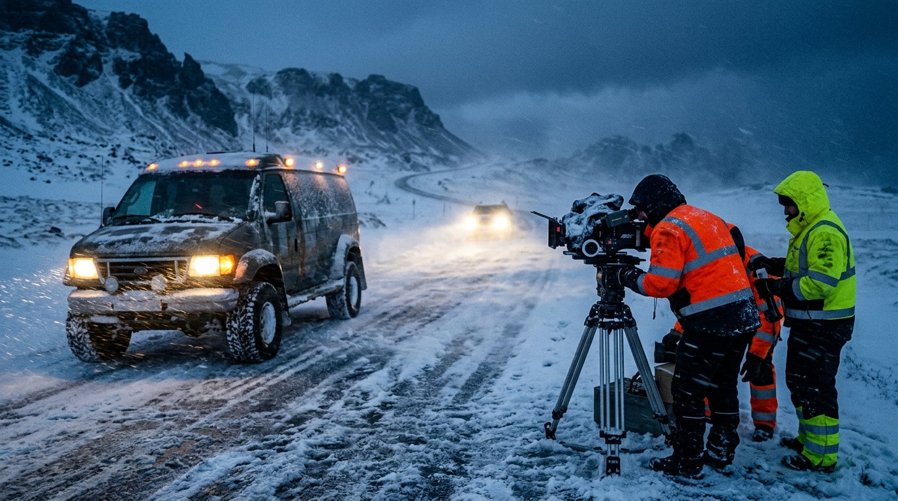
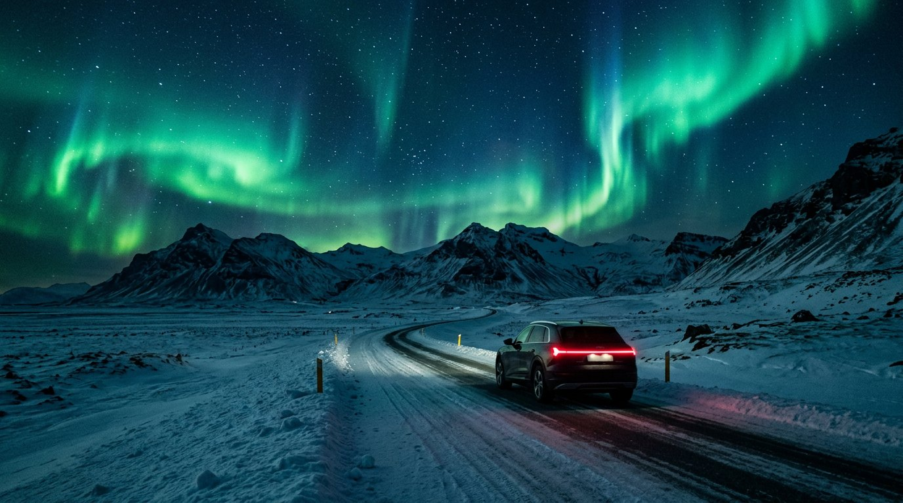

Creative
Studio
BYD · A vertical adventure series
Zero
degrees.
One famous driver. One electric BYD. One frozen island.

Creative
Studio
01 / The question
Does an electric car
really work in the cold?
It is the question almost every EV buyer in Europe asks. Ads can claim the answer. We prove it, on camera, in the hardest winter conditions Europe has to offer.

Creative
Studio
02 / The idea
A famous face. An electric BYD. An Icelandic winter.
We send a well-known personality on a road trip around Iceland in winter, with real challenges, real weather and real mishaps. The spirit of the great motoring specials, made for the vertical screen.

Creative
Studio
03 / Why Iceland
The perfect place
to prove it.
Ice, storms and long empty roads. And an island that runs almost entirely on volcanoes and glaciers: the car is charged with geothermal and hydro power.
1,322
km of Ring Road around the island
99.98%
renewable electricity
1
electric BYD
0
litres of fuel
Iceland’s electricity is 99.98% renewable (hydro, geothermal and wind).
Creative
Studio
04 / The format
A documentary series
made for the phone.
EP 1
EP 2
EP 3
EP 4
EP 5
EP 6
EP 7
EP 8
8
episodes
2 to 3 min
per episode
9:16
vertical first
1
long special, 16:9
Creative
Studio
05 / The host
A famous face who is allowed to fail.
Not a racing driver. A personality with curiosity, humour and a big audience, who has never driven on ice and is honest about it. Their nerves, jokes and small victories carry the series.
Next to them: a local Icelandic co-driver who knows the island, the weather and every shortcut. The dynamic between the two is the heart of the show.
Image · Host [Name to be cast]
The host
Image · Icelandic co-driver
The local

Creative
Studio
06 / The route
Once around the island.
In one week.
The full loop on the Ring Road, from Reykjavík and back, with a challenge at every stop.
01
Reykjavík
02
Frozen lake
03
Golden Circle
04
South Coast
05
Glacier lagoon
06
East Fjords
07
Mývatn
08
Back to Reykjavík

Creative
Studio
07 / The challenges
Every episode,
one challenge.
01
The frozen lake
Precision driving on a closed ice track. The host against the clock and against their own nerves.
02
Breakfast at the geyser
Cooking breakfast in the snow, powered only by the car’s battery.
03
Aurora night
A night under the northern lights. The car keeps the cabin warm until morning.
04
The long gap
The longest stretch between two chargers. Plan well or walk.
05
Charged by a volcano
Charging near Mývatn with power from the earth itself.
06
The final lap
A race against the clock back to Reykjavík.
Creative
Studio
08 / The episodes
Eight episodes.
Every one ends on a cliffhanger.
EP 01
Reykjavík
The keys
EP 02
Frozen lake
Thin ice
EP 03
Golden Circle
Hot water
EP 04
South Coast
Lights out
EP 05
Glacier lagoon
Blue ice
EP 06
East Fjords
No signal
EP 07
Mývatn
Fire below
EP 08
Reykjavík
Full circle
Creative
Studio
09 / The car
The car is the second star.
Hero car: BYD Sealion 7 AWD, to be confirmed with BYD. Every challenge shows one of its strengths without a single line of advertising copy.
All-wheel drive
Grip on ice and snow.
Blade Battery
Range and safety in the cold.
Heat pump
A warm cabin without losing range.
Vehicle-to-load
Power for breakfast, lights and cameras.
Image · BYD Sealion 7 in snow

Creative
Studio
10 / Distribution
One trip.
A season of content.
Published on BYD Europe’s channels and the host’s own channels, on TikTok, Instagram and YouTube. Plus behind the scenes, host stories during the trip and content for dealers and events.
8
vertical episodes
30+
social cutdowns
1
16:9 special for YouTube
2
channels: BYD and the host

Creative
Studio
11 / Production
Real conditions.
Safe and responsible.
When
Late winter: snow and ice, more daylight than midwinter, a chance of northern lights.
Team
A small, fast crew shooting vertical first, with a local fixer and a safety team on every challenge.
Respect
Iceland bans off-road driving. We stay on roads and permitted sites, and say so on screen.

Creative
Studio
Zero degrees.
Full charge.
BYD · Zero Degrees · A concept by Ivory Creative Studio